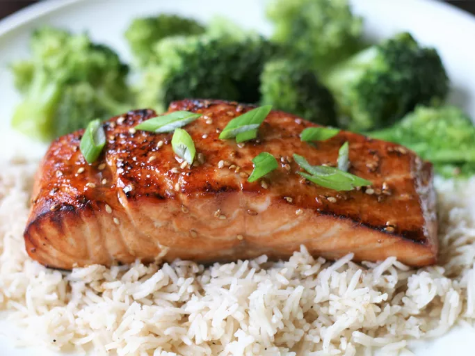

Salmon Recipe

Description
This teriyaki salmon, with its irresistible sweet and savory marinade,
will quickly become a staple in your dinner rotation. It's sure to please
even the pickiest eaters at your table!
Ingredients
- 1/4 cup sesame oil
- 1/4 cup lemon juice
- 1/4 cup soy sauce
- 2 tablespoons brown sugar or more to taste
- 1 tablespoon sesame seeds
- 1 teaspoon ground mustard
- 1 teaspoon ground ginger
- 1/4 teaspoon garlic powder
- Four 6 oz salmon steaks